Input Tools
Input tools allow you to add data to TAPIS. TAPIS supports multiple data sources, and one of its main advantages is the ability to combine data from different sources.
Each input tool is designed to load a specific type of data. Data can be loaded from APIs, such as STA services, OGC API Collections, OGC catalogues, or S3 services... It is also possible to load data from other internet sources, such as DataSpace catalogues... In addition, data can be imported directly from your computer using files such as CSV, JSON, or DBF...
Some internet sources may require authentication before the data can be accessed.
When an API service is used, data from the source is requested each time the "blue tools" are executed. In contrast, when the "grey tools" are used, TAPIS works with data that has already been loaded into the system.
Once the data has been loaded, additional tools can be added to process, transform, or analyse the data.
 STA
Service
STA
Service
Setting Up the Node:
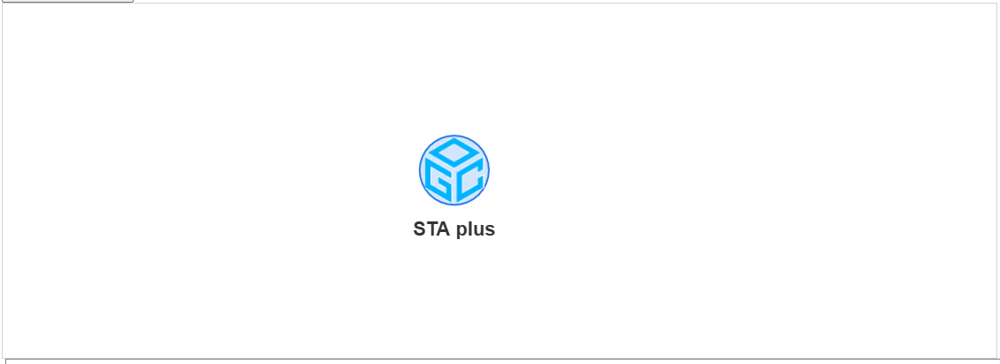
How to Use the Node:
This tool reads the STA service API and downloads the data to the browser. This data will be displayed as a table (original obtained with a JSON). When an STA service is used, data will be loaded at every step whenever you use the blue tools. Remember, using the blue tools will make a new request to the API, while using the grey tools will work with the data already stored in the browser.
Each request to the STA Service API will return only 100 records. To obtain more records, you need to request them explicitly—either by clicking an entity tool or using the Record Range tool.
Some STA services require authorization. This authorization is obtained using the Login tool.
Double-click to the tool to open it. The form below will be displayed
 To access a service, enter the service URL in the Landing Page URL field. TAPIS
provides
several examples in the dropdown below (Suggested services); select one and the URL
will be added automatically.
To access a service, enter the service URL in the Landing Page URL field. TAPIS
provides
several examples in the dropdown below (Suggested services); select one and the URL
will be added automatically.
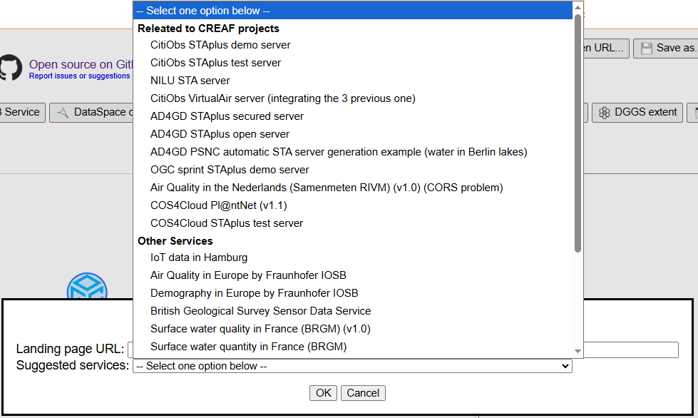
Click the OK button to load the data. If the action succeeds, “Complete” will appear in the clarification zone (the box on the right). If the action fails, the error will appear in this box—for example: HTTP Response Code: 401, indicating that authorization is required.
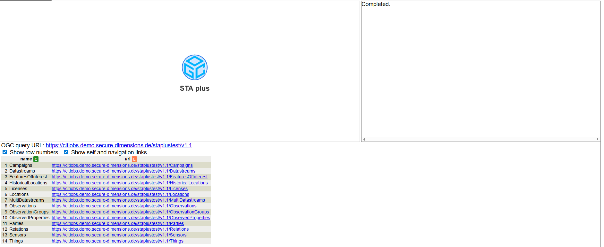
A successful result will be a table with the list of entities supported by the API.
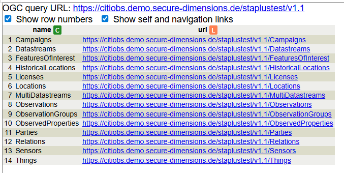
More information about STA Services: https://www.ogc.org/standards/sensorthings/
Recipes where this tool is used:
 OAPI Collections
OAPI Collections
Setting Up the Node:
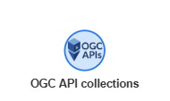
How to Use the Node:
The OAPI Collections tool connects to an OGC API Features (or compatible) landing page and returns a table with the list of collections available on that service. It is a start node.
Double-click the tool to open it. The form below will be displayed:
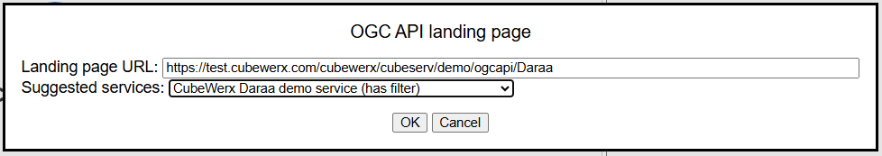
Enter the service URL in the Landing page URL field. TAPIS provides several examples in Suggested services; select one and the URL is filled automatically.
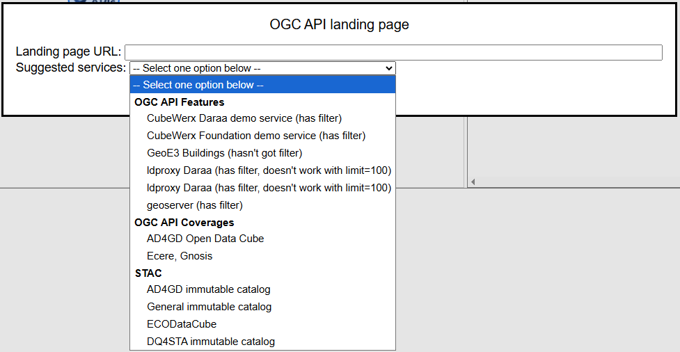
Click OK to load the data. TAPIS appends /collections when needed. A successful result is a table of collections (for example id, title, link, and often an itemsLink column).
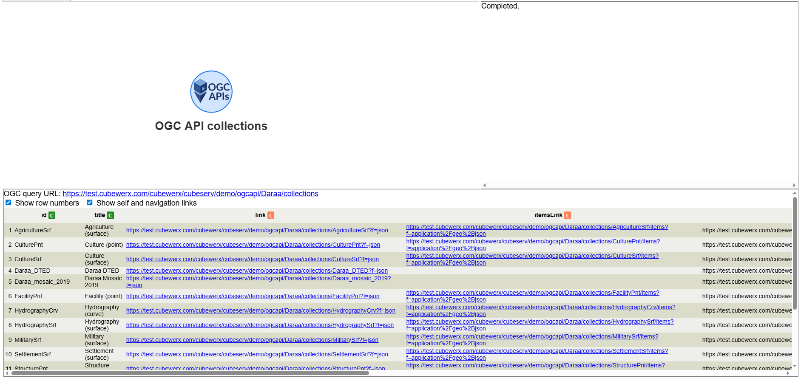
From there you can continue with OAPI items to load the features of one collection (select a row that has an items link, then connect the items tool).
Recipes where this tool is used:
- No one yet
OAPI items
Setting Up the Node:
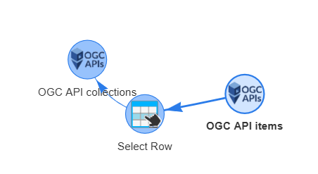
How to Use the Node:
The OAPI items tool loads the features/items of one OGC API collection into a table. One of the columns usually contains the geometry as a JSON object.
Typical workflow: start from an OAPI Collections node, select one collection row, then connect OAPI items.
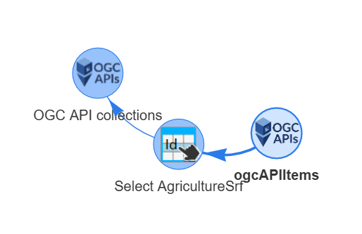
In the collections table, use a row that has an itemsLink (highlighted below). Some collections (for example coverages) may have no items link.
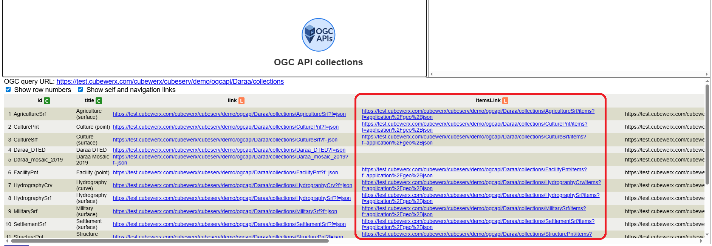
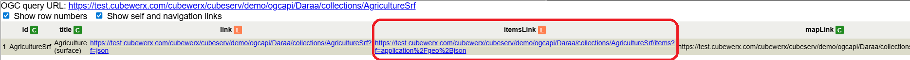
You can also open the items dialog and provide the collection items URL directly (or pick a suggested service). Confirm to request /items and fill the table.
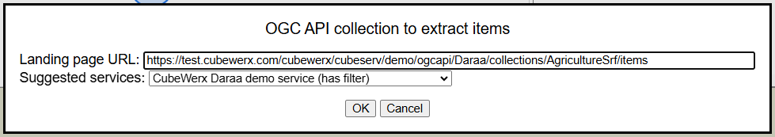
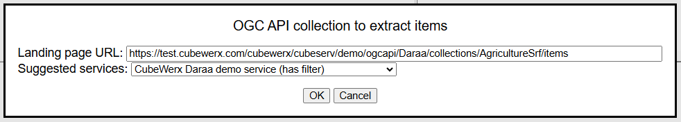
A successful result is a table of features for that collection (identifiers, property columns, and often an itemLink per feature).
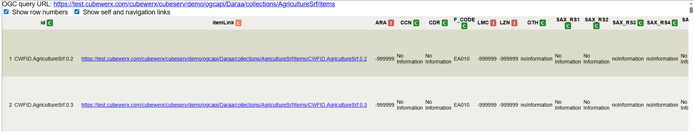
Recipes where this tool is used:
- No one yet
OGC CSW
Setting Up the Node:

How to Use the Node:
The OGC CSW tool connects to a Catalogue Service for the Web and returns a table of metadata records that have associated data.
It is a start node. Double-click, enter the catalogue Landing page URL (or choose a suggested service). TAPIS builds a GetRecords request (limited number of records) and loads the result as a table.
Typical next steps: open a record URL, import data, or use Feedback (GUF) on a single selected record.
Recipes where this tool is used:
S3 Service
Setting Up the Node:
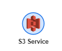
How to Use the Node:
The S3 Service tool connects to an Amazon S3 compatible endpoint (for example MinIO) and returns a table with the list of buckets. It is a start node. HTTPS is required.
Double-click the tool to open it. The form below will be displayed (title S3 Service). You can pick a Suggested service (for example AD4GD MinIO); TAPIS fills the URL and credentials automatically.
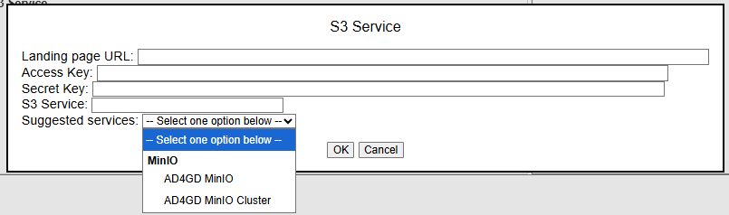
Or fill the fields yourself:
- Landing page URL — the S3 / MinIO endpoint
- Access Key and Secret Key
- S3 Service — usually
s3
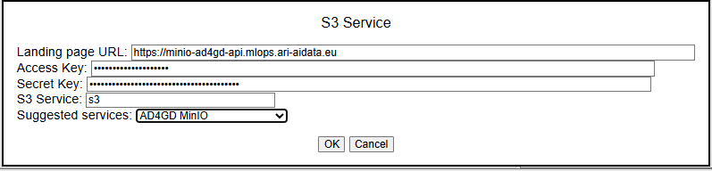
Click OK to load the data. A successful result is a table of buckets (for example name, creationDate, and href).
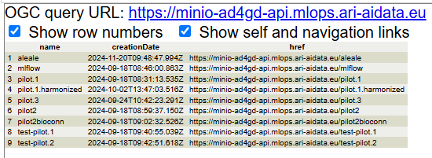
From there, select a bucket row and continue with S3 Bucket to list the objects inside that bucket.
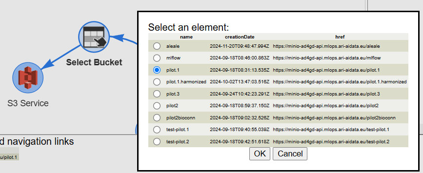
Recipes where this tool is used:
 S3
Bucket
S3
Bucket
Setting Up the Node:
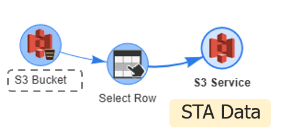
Typical workflow: start from an S3 Service node, select one bucket row, then connect S3 Bucket. Credentials from the parent can be reused.
How to Use the Node:
The S3 Bucket tool lists the files/objects available in one bucket (root and subfolders) as a table.
Double-click the tool if you need to review or edit the connection. The dialog (title S3 Bucket) shows the bucket URL and credentials (often already filled from the parent node). You can also enter them manually or use a suggested service.
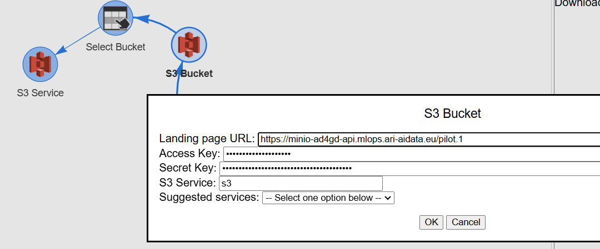
Click OK to load the objects. A successful result is a table with columns such as href, lastModified, size, ownerName and storageClass. Those hrefs can feed import tools (CSV, GeoJSON, …).
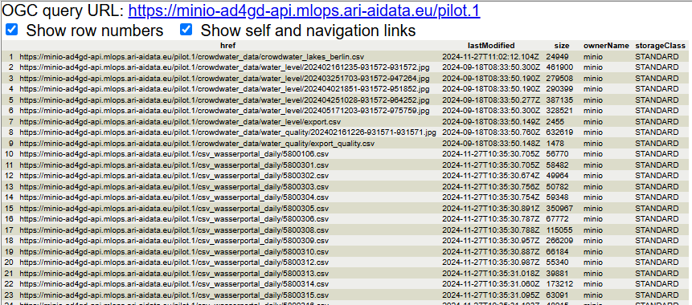
Recipes where this tool is used:
DataSpace cat.
Setting Up the Node:

How to Use the Node:
The DataSpace cat. tool connects to an Eclipse Data Connector (EDC) catalogue and returns the list of assets as a table.
Double-click: set Catalog URL, Catalog version and Consumer URL (HTTPS). Confirm to query the catalogue. Continue with DataSpace asset to negotiate a selected asset.
Recipes where this tool is used:
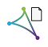
DataSpace assetSetting Up the Node:

How to Use the Node:
The DataSpace asset tool prepares / negotiates an EDC asset from a catalogue row (needs fields such as assetId and offerId).
Connect it after a DataSpace cat. node with one asset selected. There is no separate configuration form: negotiation uses the parent consumer URL and the selected asset fields. The result is a prepared asset node for further use.
Recipes where this tool is used:
CSV
Setting Up the Node:
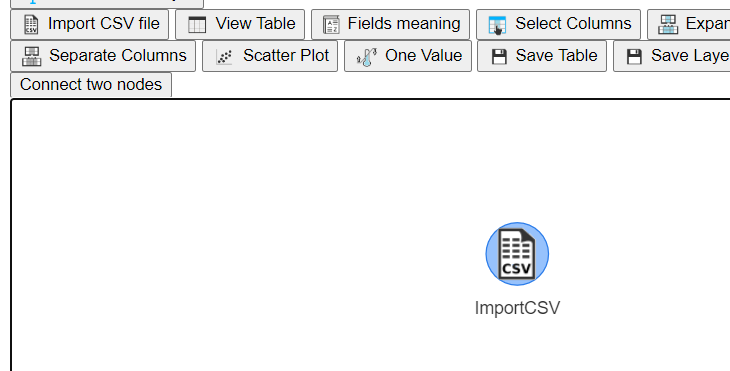
How to Use the Node:
The CSV tool imports a CSV file and returns a table. It can be a start node, or connected after a row that provides a data URL.
Double-click the dialog to set: Delimiter (character, Tab, or Auto), Encoding, whether the first line contains field names, whether to import numbers as strings, and optional Meaning (CSVW). Choose the CSV source: local file or URL.
After loading, the data appear as a normal TAPIS table for further table or visualization tools.
Recipes where this tool is used:
- Recipe 4: Add semantics (meaning) to a table and share, retrieve and store it
- Recipe 5: Selecting temperatures from an area
- Recipe 7: Connecting to a data catalogue and giving user feedback about a dataset
- Recipe 8: Connecting to a S3 service and retreive and view a CSV file in a S3 bucket
- Recipe 9: Drawing a stacked bar chart
- Recipe 11: Pivoting a table, from values in the rows of a selected column to new columns
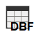
DBFSetting Up the Node:

How to Use the Node:
The DBF tool imports a DBASE III+, IV or extended DBF file and returns an attribute table.
Double-click: choose a local file or a URL, then Load. The resulting table can be used with generic table tools.
Recipes where this tool is used:
SQLite and GPKG
Setting Up the Node:

How to Use the Node:
The SQLite and GPKG tool opens a SQLite or GeoPackage database and returns a table listing the tables inside the file.
Double-click: pick a local file or URL. Then connect GeoPack Table and select one table name to load its rows.
Recipes where this tool is used:
GeoPack Table
Setting Up the Node:

How to Use the Node:
The GeoPack Table tool loads one table from a parent SQLite/GeoPackage node into a TAPIS data table.
Connect it after SQLite and GPKG with a table row selected (tableName). There is no dialog: connecting loads that table’s records.
Recipes where this tool is used:
JSON-LD
Setting Up the Node:

How to Use the Node:
The JSON-LD tool imports a JSON-LD file and flattens it into a table.
In the dialog you can optionally Add geometry and Add observations, and choose a local file or URL. Confirm to build the table.
Recipes where this tool is used:
JSON
Setting Up the Node:

How to Use the Node:
The JSON tool imports JSON (object or array) into a table.
Double-click: load from local file(s), a single URL, or a comma-separated list of URLs. The parsed records become STAdata for downstream tools.
Recipes where this tool is used:
GeoJSON
Setting Up the Node:

How to Use the Node:
The GeoJSON tool imports GeoJSON features as a table (one row per feature). One column contains the geometry JSON object.
Optionally attach meaning/schema. Source can be a local file or URL. Useful before Open Map, Save Layer, or geometry column tools.
Recipes where this tool is used:
DGGS extent
Setting Up the Node:

How to Use the Node:
The DGGS extent tool creates a table of all DGGS zone codes that fall inside a geospatial bounding box. Optionally it can add parent levels and centroid coordinates.
Double-click: set min/max longitude and latitude, choose the DGGS system and Level, optional parent levels and centroids, then Create.
Recipes where this tool is used:
 New table
New table
Setting Up the Node:

How to Use the Node:
The New table tool creates an empty table from scratch.
Double-click: enter a comma-separated list of column names and press Create. You can then edit records, add columns, or fill data with other table tools.
Recipes where this tool is used:
 Connect a sensor
Connect a sensor
Setting Up the Node:

How to Use the Node:
The Connect a sensor tool connects a physical sensor (USB or Bluetooth), collects measurements into a table, and makes them available for later tools (for example STA Entity Builder or Upload in STA).
Connect it to an STA service node. Double-click the dialog to: set the reading interval; Connect via USB or Bluetooth; view sensor information; clear or pause/resume data; adjust kit options when available (SD/Wi-Fi mode, publish interval, calibration, battery). Collected rows appear in the table area.
Close the dialog when finished; the table remains on the node for the workflow.
Recipes where this tool is used:
 Read SD from sensor
Read SD from sensor
Setting Up the Node:

How to Use the Node:
The Read SD from sensor tool reads CSV files from the SD card of a USB-connected sensor (Web Serial) and loads them as a TAPIS table.
It is a start node (do not connect it from another node). Double-click: Connect via USB, browse files on the SD, preview CSV content, optionally save as CSV, and select a file to use in TAPIS.
Recipes where this tool is used:
STA root
Setting Up the Node:

How to Use the Node:
The STA root tool returns to the root of the SensorThings API or STAplus service in use: it removes path and query parameters from the previous node URL and reloads the entity list.
Connect it under any STA/STAplus branch. There is no dialog; connecting rebuilds the root entity table for that service.
Recipes where this tool is used: